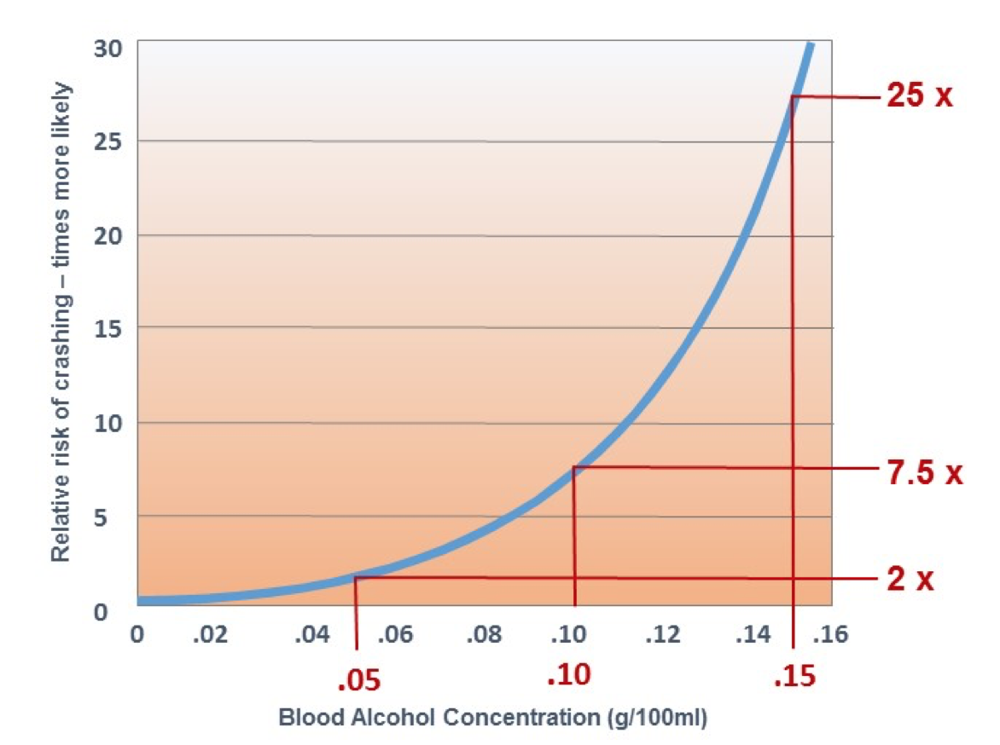
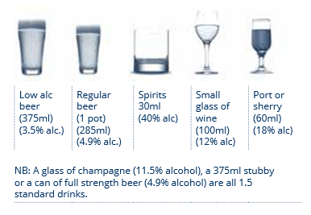

Drink Driving
Drinking is responsible for 30 percent of accidents and 1 in 4 deaths on roads. The effects that alcohol and drugs have on the body include reduced reaction rate and severely impared judgement. Reaction time is a vital measure when it comes to driving, and it’s always important to ensure to always take into account braking distance. When driving, it is vital to have an adequate braking distance from the person in front of you and when alcohol is involved, your reaction time is severely impacted along with your abilities of perception.
 Source: International Liver Foundation (easl-ilf.org)Blood alcohol concentration plays a massive role in your survival on roads. As little as a 0.5g/100ml blood content difference doubles the risk of an accident.
So how much can I drink?
Generally, the body is able to metabolise 0.01 BAC (blood-alcohol concentration) per hour. This amounts to about one standard drink per hour. However, this is not the case with every individual and metabolism rates can vary. Therefore it is always best to have a plan B in mind. The diagram below shows how much of each drink equates to one standard drink.
 Source: National Road Safety Partnership Program Australia (nrspp.com.au)Distracted Driving

Being distracted whilst driving is dangerous and one of the most disregarded risks that teenagers make while driving. Over 3,100 people were killed in the United States alone because they were distracted in 2019.
There are three types of distractions:
- Visual: Taking your eyes off the road
- Manual: Taking your hands off the wheel
- Cognitive: Taking your mind off driving
The reason why it is so dangerous to be distracted while driving has to do with speed. It is said that "Being distracted for 5 seconds while travelling at 30km/h will cover the length of a football field with your eyes closed" . A football field is a considerable distance to be travelling at such a speed, and without the perception to react to a pedestrian or the environment, accidents in such situations prove unavoidable.